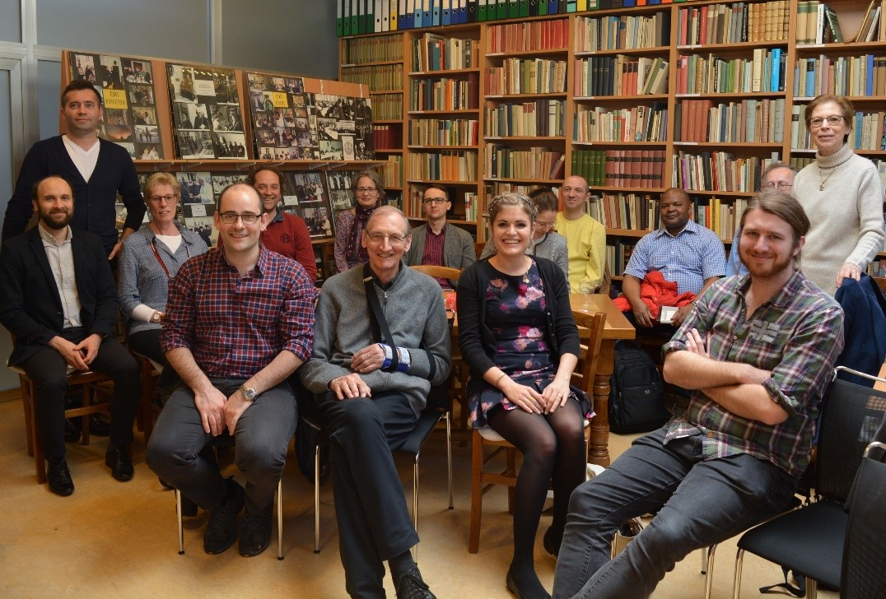
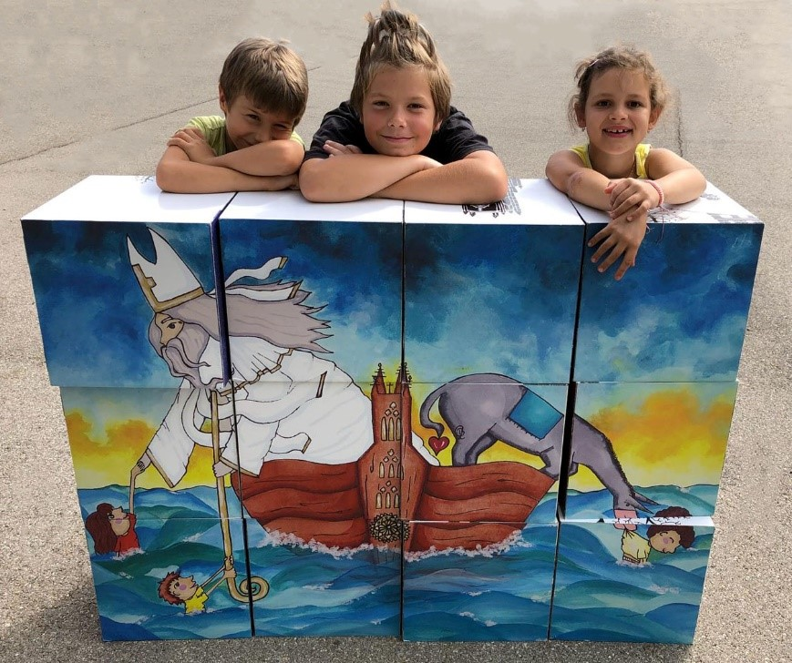
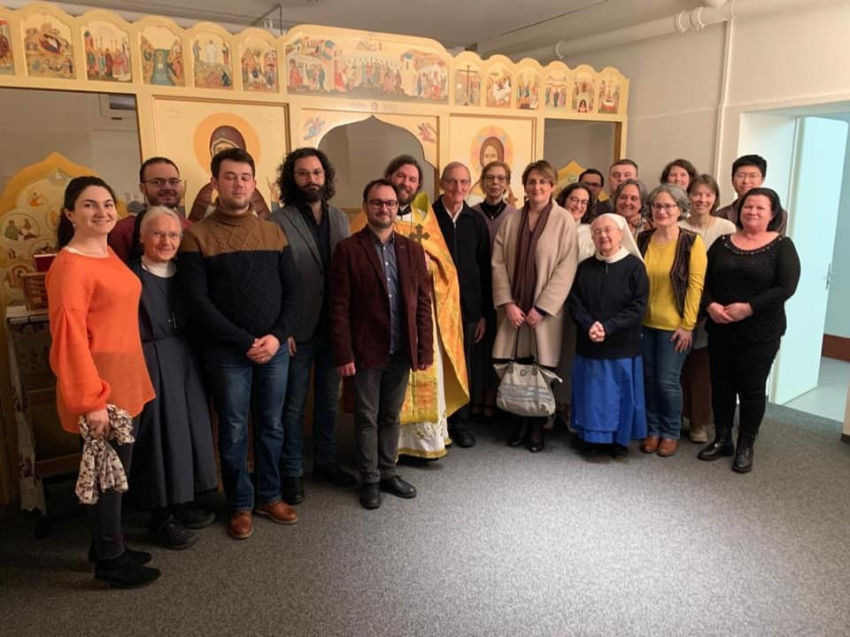
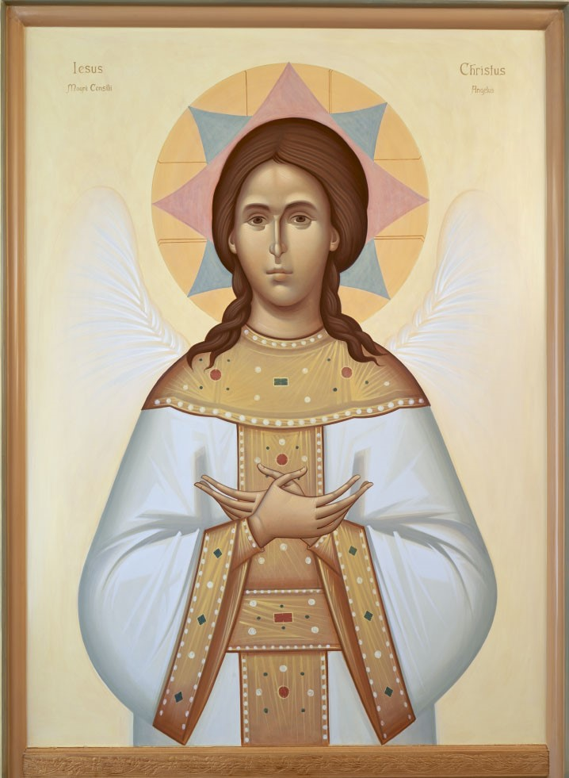
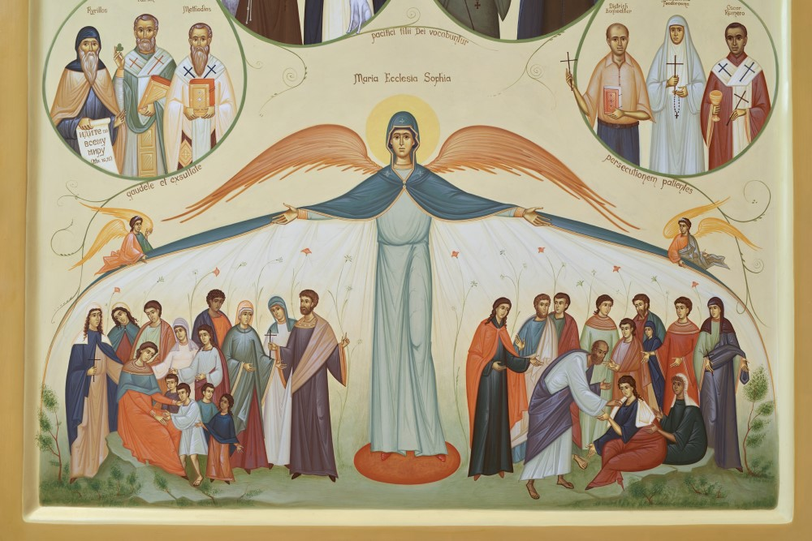

Das Logo des Zentrums: Die Darstellung des fleischgewordenen, gekreuzigten, auferstandenen und erhöhten Jesus Christus mit den Wundmalen ist dem Portal der Freiburger Nikolaus-Kathedrale entnommen. Die Brücke symbolisiert unsere Arbeit im Bau von «Brücken» zwischen Ost und West. Die Segenshand stellt das Reliquiar des heiligen Nikolaus in der Freiburger Kathedrale dar. Als Zeichen unserer Publikationsreihe Epiphania weist der Stern den Weg zur Krippe Christi und begleitet mit seinem Licht die Verkündigung der Menschenfreundlichkeit Gottes. Die am Zentrum für das Studium der Ostkirchen verliehene Silberne Rose des heiligen Nikolaus verweist auf die Schönheit und Herrlichkeit Gottes.
Kontextualisierung
Gegründet 1889 auf Initiative des Staatsrates Georges Python, umfasst die Universität Freiburg die grösste theologische Fakultät der Schweiz. Der Geist eines weltoffenen Katholizismus prägt die theologische Ausbildung in Freiburg. Dies verleiht ihr einen internationalen Ruf und eine weltweite Anerkennung, die sich auch weit in den Osten erstreckt. Die wachsende Zahl von Studierenden aus orthodoxen oder altorientalischen Traditionen – neben Studierenden reformierter, evangelikaler und freikirchlicher Prägung – zeigt den ökumenischen Geist der Ausbildung und führt zu einer Bereicherung, die aus der Begegnung der unterschiedlichen Erfahrungen entsteht. Um Initiativen in Bezug auf die ostkirchliche Tradition sichtbarer zu machen und einen institutionellen Rahmen für die Zusammenarbeit mit den Ostkirchen zu schaffen, wurde am 6. Dezember 2017, dem Nikolausfest, das Zentrum für das Studium der Ostkirchen errichtet. Angegliedert an das Institut für Ökumenische Studien (ISO), das seit 1964 besteht, bietet das Zentrum eine akademische Plattform im Rahmen der katholischen Theologie, damit orthodoxe Theologen und Theologinnen einerseits die Kirche und Theologie des Westens aus eigener Erfahrung kennen lernen können, andererseits ihre eigene Tradition aus dieser Perspektive neu durchdenken. Im Studienzentrum sind sie eingeladen, eine kreative Theologie zu entwickeln und eigenständige Akteurinnen und Akteure im Dialog zwischen Ost und West zu werden.
Workshop Ikonographie, Freiburg, Foto: Stefan Constantinescu
Tag der offenen Tür an der Uni Freiburg, Foto: Stefan Constantinescu
Tor zum Osten
Der Hauptsitz des Zentrums befindet sich im Büro 6115 der Universität Freiburg, Standort Miséricorde. Dieser Raum beherbergt – neben der kostbaren Privatbibliothek des reformierten Theologen und Hagiographen Walter Nigg (1903-1988) – eine reichhaltige orthodoxe Dokumentation, u.a. die Archive des Ostkirchlichen Instituts Regensburg, und ermöglicht Forschenden den Austausch im geselligen akademischen Rahmen. Dieses Miniaturlaboratorium bringt Interessierte aus allen Lebensbereichen und aus einer Vielzahl von orthodoxen und anderen konfessionellen Hintergründen zusammen. Das Forschungsprogramm ist massgeblich von der Direktorin des Zentrums, Prof. Dr. Barbara Hallensleben, Professorin für Dogmatik und Theologie der Ökumene, geprägt. Das Ausbildungsprogramm basiert unter anderem auf der regelmässig angebotenen Hauptvorlesung „Ostkirchen und orthodoxe Theologie“ und den derzeit laufenden Forschungsprojekten des Zentrums: 1) Sergij Bulgakov und die Sophiologie, 2) Giorgio Agamben und seine politisch-philosophische Neuinterpretation der theologischen Tradition, 3) Die Theologie der „Schwesterkirchen“, 4) Synodalität in Ost und West, 5) Das Konzil von Florenz und die „Kirchenunionen“, 6) Mission in orthodoxer Perspektive, 7) Ästhetik und Ikonographie. All diese Themen sind nicht nur aus der Perspektive der orthodoxen Theologie von Bedeutung, sondern wichtig auch für ein besseres Verständnis der westlichen Entwicklungen in ihren Besonderheiten und Grenzen. In den entsprechenden Projekten arbeiten Professorinnen und Professoren mit Studierenden, Doktorierenden, Gastforschenden und anderen Vertreterinnen und Vertretern der orthodoxen Kirchen an der Theologischen Fakultät im Rahmen des Studienzentrums zusammen.
Die ökumenische Vision wird nicht nur theologisch und wissenschaftlich reflektiert, sondern auch im täglichen Leben der Studierenden erprobt und gelebt. Der Verein St. Nikolaus orthodoxer Studierender an der Universität Freiburg unter der Leitung von Stefan Constantinescu, zugleich Ko-Direktor des Studienzentrums, bietet eine Plattform für orthodoxe Studierende östlicher Traditionen, um ihnen bei der Integration in das universitäre Umfeld von Freiburg zu helfen. Der Verein steht auch katholischen, protestantischen und andersgläubigen Studierenden offen, die sich für die ostkirchliche Kultur interessieren. Unter den angebotenen Aktivitäten ist das regelmässige Gebet jeden Montag um 12.15 Uhr in der orthodoxen Kapelle des Salesianum (Studierendenwohnheim) und die Feier der Liturgie zu erwähnen. Zu den weiteren Aktivitäten gehören Workshops über liturgischen Gesang, Ikonographie und sogar Spiele für Kinder anlässlich des Tages der offenen Tür der Universität Freiburg oder des von der Stadt Freiburg organisierten Familientages während des Nikolausfestes. Der Verein umfasst derzeit etwa zwanzig Mitglieder aus verschiedenen Ländern wie Rumänien, Moldawien, Russland, Ukraine, Griechenland, Kamerun, China, Deutschland und Belgien. Viele studieren Theologie, andere Philosophie, klassische Philologie, Medizin oder sind am Konservatorium von Freiburg eingeschrieben. Der Verein richtet sich an Studierende aus der gesamten orthodoxen Welt, aus den alten und den neuen Patriarchaten, aber auch aus der äthiopischen, eritreischen, koptischen, armenischen, syrischen und indischen Kirche.
Nach der Feier der Liturgie in der Kapelle, Foto: Stefan Constantinescu
Ein Ort der Verwandlung: die orthodoxe Kapelle
Ein ehemaliger Tischtennisraum im Kellergeschoss im Convict Salesianum (Av. de Moléson 21, 1700, Fribourg) wurde dank der ökumenischen Gastfreundschaft der Gemeinschaft „Chemin Neuf“, die das Haus leitet, in eine orthodoxe Kapelle umgewandelt und beherbergt nun eine orthodoxe Ikonostase. Die Ikonostase besteht aus einer mit Ikonen bemalten Holzwand, die den Altarraum mit dem Gemeinderaum verbindet und an die Gegenwart der Gemeinschaft der Engel und Heiligen bei der Feier der Liturgie erinnert. Der Ikonograph, Gabriel Solomon aus Cluj in Rumänien, ist selbst noch Student und zugleich bereits ein Meister seines Fachs. Die Darstellungen der Ikonostase bilden eine überraschende Synthese westlicher und östlicher Tradition. So sind auch Zeugen des Glaubens wie Dietrich Bonhoeffer und Oscar Romero neben biblischen Gestalten und Kirchenvätern vertreten. Traditionelle Regeln der Ikonographie werden berücksichtigt, aber zugleich werden ungewohnte, neue Darstellungen gewagt. So zeigt die Ikone Jesu Christi den Erlöser als jungen Mann ohne Bart. Diese seltene orthodoxe Darstellung weicht von der traditionellen Repräsentation Jesu Christi als strenger Herrscher, als Pantokrator, ab. Christus trägt auf dieser Ikone Priestergewänder und hat Flügel, um die Vollkommenheit seiner menschlichen Natur zu symbolisieren. Im Westen wird Jesus in dieser Darstellung „Engel des guten Rates“ (angelus boni consilii) genannt. Darüber hinaus betont der Ikonograph die Sendung Jesu als Zeuge für die Wahrheit Gottes. Diese Darstellung lädt uns ein, in die Stille der Begegnung im Angesicht des fleischgewordenen Logos als Quelle jedes Wortes einzutreten. Insgesamt ist der Weg des künstlerischen Ausdrucks der Ikonostase ein Mittel, um die theologische Bedeutung der Menschwerdung zu erfassen. Vor der Ikone verwandelt sich die menschliche Sprache, im schweigenden Betrachten wird sie entmachtet und zugleich neu ermächtigt zum Zeugnis für das göttliche Wort. Diese Kontemplation ist die Quelle, aus der auch die höchste Form der Theologie hervorgeht.
Ikone Jesu Christi auf der Ikonostase der Kapelle
Ikone Maria Ecclesia Sophia auf der Ikonostase der Kapelle
Stefan Constantinescu ist Assistent am Departement für Glaubens- und Religionswissenschaft und Philosophie und Ko-Direktor des Zentrums für das Studium der Ostkirchen an der Universität Freiburg CH
Zur Vertiefung:
- Ein normales Listenelement
- www.unifr.ch/orthodoxia
- Barbara Hallensleben / Stefan Constantinescu, „Ikonen als Zugang zum Göttlichen“, in: Schweizerische Kirchenzeitung 187 (2019), Nr. 23, S. 479.
- Barbara Hallensleben,Interview in: Foi, revue de la communauté «Chemin neuf», Nr. 58, September – Oktober - November 2018, S. 19.
- Stefan Constantinescu, Interview in: Schweizerische Kirchenzeitung 186 (2018), Nr. 19, S. 404-405.
- Stefan Constantinescu,Interview in: Alma&Georges, Das Online-Magazin der Universität Freiburg (30.10.2018).